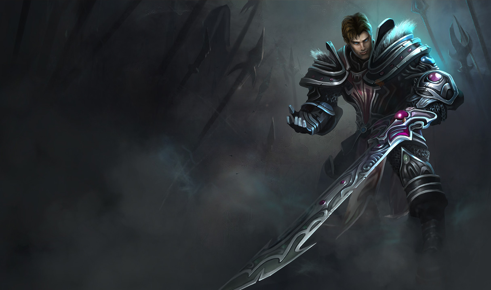

Garen cavalerul groazei pentru followerii de pe Twitter
A aparut o noua oprtunitate pentru a primii erou/aspect gratis.Daca urmariti contul de twitter @LolEU veti primi eroul Garen si aspectul Garen cavalerul groazei.
Uitati tot articolul scris de Riot AMORSA:
"Invocatori,
Ca parte a eforturilor noastre de a oferi stiri localizate despre League of Legends comunitatii din Europa, vom recompensa followerii de pe Twitter cu aspectul Garen cavalerul groazei. Pentru a revendica acest aspect trebuie sa va logati pe Twitter si sa folositi apoi aceasta aplicatie pentru a urmari contul @LoLEU.
(Codurile vor functiona doar pe serverele EUNE/EUW.)
In plus, o sa continuam sa strangem cat mai multe pareri legate de cum sa folosim cel mai bine Twitter, pentru a se potrivi nevoilor voastre. Daca aveti sugestii sau idei pentru continutul ce ar trebui publicat, nu ezitati sa ne spuneti."
Garen cavalerul groazei
